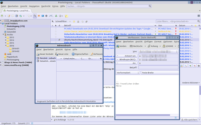

FossaMail
Dieser Artikel wurde für die folgenden Ubuntu-Versionen getestet:
Ubuntu 16.04 Xenial Xerus
Ubuntu 14.04 Trusty Tahr
Zum Verständnis dieses Artikels sind folgende Seiten hilfreich:
Der E-Mail-Client FossaMail  ist eine Abspaltung von Thunderbird. Das von der Fa. Moonchild Productions initiierte und betreute Programm steht wie das Originalprogramm unter der MPL-Lizenz.
ist eine Abspaltung von Thunderbird. Das von der Fa. Moonchild Productions initiierte und betreute Programm steht wie das Originalprogramm unter der MPL-Lizenz.
Hinweis:
Die Entwicklung der Anwendung wurde im Mai 2017 eingestellt. Die letzte offizielle Version war 38.2.0.
Pro:
besitzt ähnliche Optimierung wie der Webbrowser Pale Moon, der das Backend des E-Mail Clients darstellt
nutzt einen eigenen Profil-Ordner ~/.fossamail/, so dass Thunderbird und FossaMail unabhängig nebeneinander eingesetzt werden können
(nach Installation eines Sprachpakets) vollständig auf Deutsch übersetzt
regelmäßige Aktualisierungen
ist kompatibel zu Thunderbird und kann damit die Add-Ons und Plugins nutzen, die für die Thunderbird-Versionen 24/25 Beta geschrieben worden sind
plattformunabhängig (Windows und Linux)
bietet eine eigene Version des Lightning-Kalenders, dass das Programm mit ähnlichen Funktionen wie Microsoft Outlook ausstattet
Kontra:
keine Installation aus den offiziellen Paketquellen
keine automatische Aktualisierung der Linux-Version (bei manueller Installation)
kleine (aber aktive) Community
Installation¶
Das Programm ist nicht über die offiziellen Paketquellen verfügbar und muss von daher entweder über eine Fremdquelle oder manuell mit Hilfe von vorkompilierten Binärdateien installiert werden.
Fremdquelle¶
Hinweis!
Zusätzliche Fremdquellen können das System gefährden.
Anmerkung: Über diese Fremdquelle kann auch der Browser Pale Moon installiert werden.
Um die Fremdquelle einzurichten, sind folgende Befehle im Terminal erforderlich:
sudo add-apt-repository 'deb http://kovacsoltvideo.hu/moonchildproductions/ ./' wget -q http://kovacsoltvideo.hu/moonchildproductions/public.gpg -O- | sudo apt-key add -
Nach dem Aktualisieren der Paketquellen kann folgendes Paket installiert werden:
fossamail (Fremdquelle)
 mit apturl
mit apturl
Paketliste zum Kopieren:
sudo apt-get install fossamail
sudo aptitude install fossamail
Manuell¶
Hinweis!
Fremdsoftware kann das System gefährden.
Auf dem PaleMoon FTP-Server stehen Archivdateien  für 32- und 64-bit-Systeme bereit, die passend zur eigenen Systemarchitektur heruntergeladen und entpackt [1] werden müssen. Der Dateiname lautet (schematisch):
für 32- und 64-bit-Systeme bereit, die passend zur eigenen Systemarchitektur heruntergeladen und entpackt [1] werden müssen. Der Dateiname lautet (schematisch):
64-Bit: FossaMail-VERSION.linux-x86_64.tar.bz2
32-Bit: FossaMail-VERSION.linux-x86.tar.bz2
Die Installation kann in das eigene Homeverzeichnis oder systemweit nach /opt/ erfolgen (für letzteres werden Root-Rechte benötigt).
Homeverzeichnis¶
Am einfachsten erfolgt das Entpacken in das eigene Homeverzeichnis, z.B. in den Ordner ~/bin/FossaMail/. Dann muss nur noch ein Programmstarter erstellt werden, damit man das Programm bequem starten kann.
Systemweit¶
Bei einer systemweiten Installation wird zunächst die Archivdatei entpackt [2][3]:
sudo tar -xvf ARCHIVDATEI.tar.bz2 -C /opt
Anschließend erstellt man mit ln einen symbolischen Link /usr/local/bin/FossaMail:
sudo ln -s /opt/FossaMail/FossaMail /usr/local/bin/FossaMail
Programmstarter erstellen¶
Bei Bedarf kann man einen Programmstarter [4] erstellen, der nicht nur bei Ubuntu-Varianten mit einem Anwendungsmenü nützlich ist (PFAD bitte anpassen):
[Desktop Entry] Encoding=UTF-8 Type=Application Name=FossaMail Comment=Send and receive mail with FossaMail Comment[de]=E-Mails mit FossaMail senden und empfangen GenericName=Mail Client Exec=/PFAD/ZU/FossaMail %u Icon=/PFAD/ZU/FossaMail/chrome/icons/default/default48.png Terminal=false X-MultipleArgs=false Categories=Internet; MimeType=x-scheme-handler/mailto;application/x-xpinstall; StartupNotify=true Actions=Compose;Contacts [Desktop Action Compose] Name=Compose New Message Exec=FossaMail -compose OnlyShowIn=Messaging Menu;Unity; [Desktop Action Contacts] Name=Contacts Exec=FossaMail -addressbook OnlyShowIn=Messaging Menu;Unity;
Diesen Programmstarter speichert man entweder nach ~/.local/share/applications/fossamail.desktop oder mit Root-Rechten nach /usr/share/applications/fossamail.desktop (bei systemweiter Installation).
Sprachpaket¶
Sprachpakete für eine Vielzahl unterschiedlicher Sprachen befinden sich auf dem FTP-Server des Pale Moon-Projektes. Bitte beim Herunterladen darauf achten, dass die Programmversion und die Version des Sprachpakets übereinstimmen. Für eine deutsche Programmoberfläche wird die Datei de.xpi benötigt.
Nach dem Herunterladen wird das Sprachpaket wie eine Thunderbird-Erweiterung installiert. Anschließend öffnet man mit about:config den Konfigurationseditor von FossaMail und sucht nach dem Schlüssel "general.useragent.locale". Dieser muss von "en-US" in den Namen des Sprachpakets geändert werden, also beispielsweise in "de". Den Konfigurationseditor startet man unter "Edit -> Preferences -> Advanced -> General -> Config Editor".
Nach einem abschließenden Neustart des Programms sollte die Programmoberfläche auf Deutsch sein.
Verwendung¶
Bei Ubuntu-Varianten mit einem Anwendungsmenü findet man einen Eintrag unter "Internet -> FossaMail" [5].
FossaMail lässt sich wie Thunderbird bedienen - hier wird man keinen Unterschied feststellen. Allerdings gibt es bei der Nutzung von Erweiterungen das Problem, dass eine Erweiterung den (geänderten) Profilordner von FossaMail berücksichtigen muss. Während dies beim mitinstallierten Lightning der Fall ist, sollte dieses bei anderen Erweiterungen im Hinterkopf behalten werden.

Aktualisierung¶
Zur Aktualisierung einer manuellen Installation den Ordnerinhalt (!) des FossaMail-Ordners löschen, der Ordner selbst wird noch benötigt. Anschließend wird die neue Version heruntergeladen und in den vorhandenen Ordner entpackt.
Deinstallation¶
Bei einer manuellen Installation einfach den FossaMail-Ordner löschen. Hat man einen Programmstarter und/oder eine Verknüpfung erstellt, muss man diese zusätzlich löschen.
 Programmübersicht
Programmübersicht- Erstellt mit Inyoka
-
 2004 – 2017 ubuntuusers.de • Einige Rechte vorbehalten
2004 – 2017 ubuntuusers.de • Einige Rechte vorbehalten
Lizenz • Kontakt • Datenschutz • Impressum • Serverstatus -
Serverhousing gespendet von